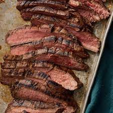

Marinated Flank Steak

Description
Flank steak is a lean cut of beef that comes from the cow's lower abdominal muscles.
It's a relatively tough cut that's low in fat, which means a few things:
Flank steak doesn't need to be trimmed, it's inexpensive compared to other cuts,
and it benefits greatly from marination.
A great flank steak marinade like this quick and easy one is important if you want a tender, juicy, flavorful steak.
Make sure you marinate your flank steak for at least 2 hours for best results or longer if you have time.
I invented this wonderful marinated, grilled flank steak recipe and my friends and girls just love it.
This recipe also works great when the steak is sliced and used for fajitas.
Ingredients
- 1/2 cup vegetable oil
- 1/3 cup low-sodium soy sauce
- 1/4 cup red wine vinegar
- 2 tbsp fresh lemon juice
- 1 tablespoon Dijon mustard
- 2 cloves of garlic, minced
- 1 1/2 tablepoons of Worchestershire sauce
- 1/2 teaspoon ground black pepper
- 2 pound flank steak
Steps
- Whisk together oil, soy sauce, vinegar,
lemon juice, Worcestershire sauce, Dijon mustard, garlic, and pepper for marinade
in a 9x13-inch glass baking dish until thoroughly combined.
- Add flank steak to the baking dish; turn several times to coat thoroughly with marinade.
Cover, and refrigerate for 2 to 6 hours, or up to 12 hours if you have time.
- When ready to cook, preheat an outdoor grill for medium-high heat and lightly oil the grate.
- Remove steak from the marinade and shake off excess. Discard the remaining marinade.
- Cook steak on the preheated grill for about 5 minutes per side, or to desired doneness.
- Remove from the grill and let rest for 5 minutes before slicing and serving.
HOME